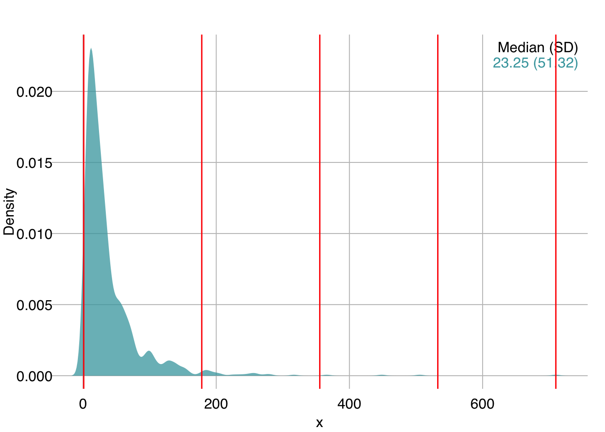
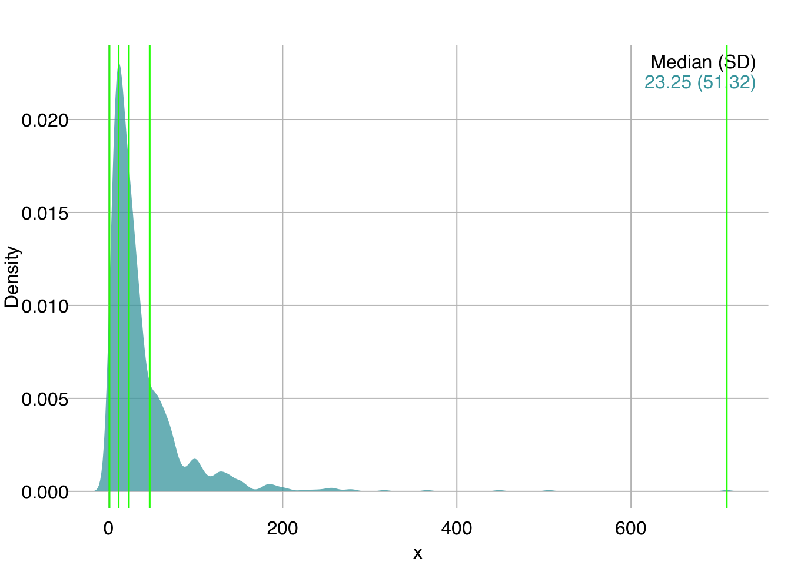

28 Data Transformations
28.1 Continuous variables
28.1.1 Standardization / Scaling & Centering with scale()
Scaling of a numeric vector is achieved by elementwise division with the standard deviation. A scaled vector therefore has standard deviation equal to 1.
Centering of a numeric vector is achieved by elementwise subtraction of its mean. A centered vector therefore has mean equal to 0.
Standardizing, a.k.a. converting to Z-scores, involves scaling and centering. Scaling and centering is performed in R with the scale() function.
Depending on your modeling needs / the algorithms you plan to use, it is often important to scale and/or center your data. Note that many functions, but not all, may automatically scale and center data internally if it is required by the algorithm. Check the function documentation to see if you should manually scale or not.
scale() can be applied to a single vector or a matrix/data.frame. In the case of a matrix or data.frame, scaling is applied on each column individually. By default, both arguments scale and center are set to TRUE.
Scale a vector:
head(iris$Sepal.Length)[1] 5.1 4.9 4.7 4.6 5.0 5.4 [,1]
[1,] -1.335752
[2,] -1.335752
[3,] -1.392399
[4,] -1.279104
[5,] -1.335752
[6,] -1.165809Scale multiple columns of a matrix/data.frame:
Sepal.Length Sepal.Width Petal.Length Petal.Width
[1,] -0.8976739 1.01560199 -1.335752 -1.311052
[2,] -1.1392005 -0.13153881 -1.335752 -1.311052
[3,] -1.3807271 0.32731751 -1.392399 -1.311052
[4,] -1.5014904 0.09788935 -1.279104 -1.311052
[5,] -1.0184372 1.24503015 -1.335752 -1.311052
[6,] -0.5353840 1.93331463 -1.165809 -1.048667First, let’s verify that scale() did what we wanted:
colMeans(iris.scaled) Sepal.Length Sepal.Width Petal.Length Petal.Width
-1.457168e-15 -1.638319e-15 -1.292300e-15 -5.543714e-16 apply(iris.scaled, 2, sd)Sepal.Length Sepal.Width Petal.Length Petal.Width
1 1 1 1 We got effectively 0 mean and standard deviation of 1 for each column.
scale() outputs the scaled vector(s) along with the scaling and/or centering parameters saved as attributes in the output.
Note that in both cases, whether a vector input or data.frame, the output is a matrix:
Get the output attributes:
attributes(Petal.Length_scaled)$dim
[1] 150 1
$`scaled:center`
[1] 3.758
$`scaled:scale`
[1] 1.765298center is the mean:
mean(iris$Petal.Length)[1] 3.758scale is the standard deviation:
sd(iris$Petal.Length)[1] 1.765298For a matrix/data.frame input, you get center and scale attributes per column:
attributes(iris.scaled)$dim
[1] 150 4
$dimnames
$dimnames[[1]]
NULL
$dimnames[[2]]
[1] "Sepal.Length" "Sepal.Width" "Petal.Length" "Petal.Width"
$`scaled:center`
Sepal.Length Sepal.Width Petal.Length Petal.Width
5.843333 3.057333 3.758000 1.199333
$`scaled:scale`
Sepal.Length Sepal.Width Petal.Length Petal.Width
0.8280661 0.4358663 1.7652982 0.7622377 Let’s save the scale and center attributes and then double check the calculations:
.center <- attr(iris.scaled, "scaled:center")
.centerSepal.Length Sepal.Width Petal.Length Petal.Width
5.843333 3.057333 3.758000 1.199333 .scale <- attr(iris.scaled, "scaled:scale")
.scaleSepal.Length Sepal.Width Petal.Length Petal.Width
0.8280661 0.4358663 1.7652982 0.7622377 Sepal.Length_scaled <- (iris$Sepal.Length - .center[1]) / .scale[1]
all(Sepal.Length_scaled == iris.scaled[, "Sepal.Length"])[1] TRUE(Note: Due to limitation in numerical precision, checking sets of floats for equality after multiple operations is tricky. all.equal() is a good option here and tests for “near equality”.)
all.equal(Sepal.Length_scaled, iris.scaled[, "Sepal.Length"])[1] TRUEIf you are manually scaling and/or centering data for supervised learning, you must:
- Perform scaling and centering on your training data,
- Save the centering and scaling parameters for each feature, and
- Apply the training set-derived centering and scaling parameters to the test set prior to prediction/inference.
A common mistake is to either scale training and testing data together in the beginning, or scale them independently.
28.1.2 Normalization
Normalization has different meanings in different contexts; in the context of a numeric variable it usually refers to converting to a 0-1 range.
Let’s write a simple function to achieve this:
x <- rnorm(20, mean = 13, sd = 1.4)
x [1] 12.770468 12.465735 16.012055 13.479437 12.986218 13.120437 13.552462
[8] 14.670063 15.160900 12.415136 13.046739 13.421280 9.204957 13.617690
[15] 13.122372 13.437604 11.808112 12.841868 12.875993 13.895773x_normalized <- normalize(x)
x_normalized [1] 0.19876694 0.80464577 0.42065249 0.31872618 0.10026779 0.34928303
[7] 0.36507296 0.13168251 0.50925422 0.68403959 0.45534707 1.00000000
[13] 0.58712524 0.05571725 0.11874613 0.53256784 0.00000000 0.25163201
[19] 0.31595511 0.45863174min(x_normalized)[1] 0max(x_normalized)[1] 1Note that it is easy to make the normalize() function more general, by adding lo and hi arguments to convert to any range:
dr(x, -1, 1) [1] -0.60246612 0.60929154 -0.15869503 -0.36254764 -0.79946441 -0.30143394
[7] -0.26985408 -0.73663497 0.01850844 0.36807918 -0.08930585 1.00000000
[13] 0.17425049 -0.88856550 -0.76250775 0.06513568 -1.00000000 -0.49673598
[19] -0.36808978 -0.08273652
28.1.3 Log-transform with log()
For the following example, x is an unknown feature in a new dataset we were just given.
We start by plotting its distribution:
mplot3_x(x)We can see it is skewed right. A log transform can help here:
mplot3_x(log(x))
28.1.4 Data binning with cut()
A different approach for the above variable might be to bin it.
Let’s look at a few different ways to bin continuous data.
28.1.4.1 Evenly-spaced interval
cut() allows us to bin a numeric variable into evenly-spaced intervals.
The breaks argument defines the number of intervals:
[1] (0.291,178] (0.291,178] (0.291,178] (0.291,178] (0.291,178] (0.291,178]
Levels: (0.291,178] (178,355] (355,533] (533,711]table(x_cut4)x_cut4
(0.291,178] (178,355] (355,533] (533,711]
977 19 3 1 Interval Notation
[3, 9) represents the interval of real numbers between 3 and 9, including 3 and excluding 9.
Because the data is so skewed, equal intervals are not helpful in this case. The majority of the data points get grouped into a single bin.
Let’s visualize the cuts:
mplot3_x(x, par.reset = FALSE)
# plot(density(x)) # in base R
abline(v = xcuts5, col = "red", lwd = 1.5)
[Note: We used par.reset = FALSE to stop mplot3_x() from resetting its custom par() settings so that we can continue adding elements to the same plot, in this case with the abline() command.]
28.1.4.2 Quantile cuts
Instead of evenly-spaced intervals, we can get quantiles with quantile(). We ask for 5 quantiles using the length.out argument, which corresponds to 4 intervals:
xquants5 <- quantile(x, probs = seq(0, 1, length.out = 5))
mplot3_x(x, par.reset = FALSE)
# plot(density(x)) # in base R
abline(v = xquants5, col = "green", lwd = 1.5)
The breaks argument of cut() allows us to pass either an integer to define the number of evenly-spaced breaks, or a numeric vector defining the position of breaks.
We can therefore pass the quantile values as break points.
Since the quantile values begin at the lowest value in the data, we need to define include.lowest = TRUE so that the first interval is inclusive of the lowest value:
x_cutq4
[1,11.5] (11.5,23.2] (23.2,47.2] (47.2,710]
250 250 250 250 With quantile cuts, each bin contains roughly the same number of observations (+/- 1).
28.2 Categorical variables
Many algorithms (or their implementations) do not directly support categorical variables. To use them, you must therefore convert all categorical variables to some type of numerical encoding.
28.2.1 Integer encoding
If the categorical data is ordinal, you can simply convert it to integers.
For example, the following ordered factor:
brightness <- factor(c("bright", "brightest", "darkest",
"bright", "dark", "dim", "dark"),
levels = c("darkest", "dark", "dim", "bright", "brightest"),
ordered = TRUE)
brightness[1] bright brightest darkest bright dark dim dark
Levels: darkest < dark < dim < bright < brightestcan be directly coerced to an integer:
as.integer(brightness)[1] 4 5 1 4 2 3 228.2.2 One-hot encoding
When categorical features are not ordinal, and your algorithm cannot handle them directly, you can one-hot encode them. In one-hot encoding, each categorical feature is converted to k binary features, where k = number of unique values in the input, such that only one feature has the value 1 per case. This is similar to creating dummy variables in statistics, with the difference that dummy variables create k - 1 new variables.
set.seed(21)
admission_reasons <- c("plannedSurgery", "emergencySurgery", "medical")
admission <- sample(admission_reasons, size = 12, replace = TRUE)
admission [1] "medical" "plannedSurgery" "medical" "plannedSurgery"
[5] "emergencySurgery" "medical" "plannedSurgery" "medical"
[9] "medical" "emergencySurgery" "emergencySurgery" "emergencySurgery"Multiple packages include functions that perform one-hot encoding. It’s a simple operation and we don’t necessarily need to install a large package with many dependencies.
Let’s write a simple function to perform one-hot encoding. Note, you may have heard that for loops can be slow in R, but that depends on the operations performed. Here, we loop over an integer matrix and it is plenty fast.
onehot <- function(x, xname = NULL) {
if (is.null(xname)) xname <- deparse(substitute(x))
x <- factor(x)
.levels <- levels(x) # Get factor levels
ncases <- NROW(x) # Get number of cases
index <- as.integer(x) # Convert levels to integer
oh <- matrix(0, nrow = ncases, ncol = length(.levels)) # Initialize zeros matrix
colnames(oh) <- paste(xname, .levels, sep = "_") # Name columns by levels
for (i in seq(ncases)) oh[i, index[i]] <- 1 # Assign "1" to appropriate level
oh
}Let’s apply our new function to the admission vector:
onehot(admission) admission_emergencySurgery admission_medical admission_plannedSurgery
[1,] 0 1 0
[2,] 0 0 1
[3,] 0 1 0
[4,] 0 0 1
[5,] 1 0 0
[6,] 0 1 0
[7,] 0 0 1
[8,] 0 1 0
[9,] 0 1 0
[10,] 1 0 0
[11,] 1 0 0
[12,] 1 0 0Note: deparse(substitute(x)) above is used to automatically get the name of the input object (in this case “admission”). This is similar to how many of R’s internal functions (e.g. plot()) get the names of input objects.